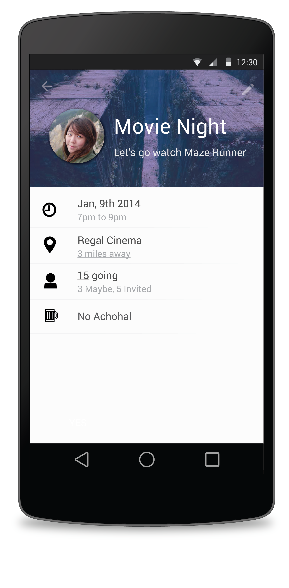
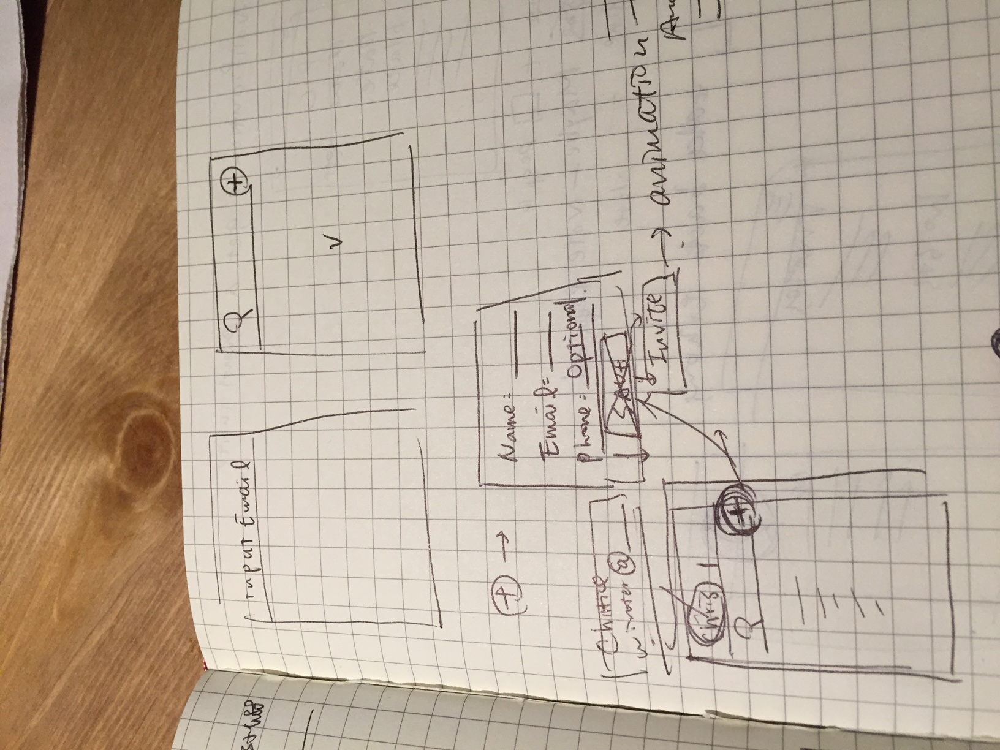
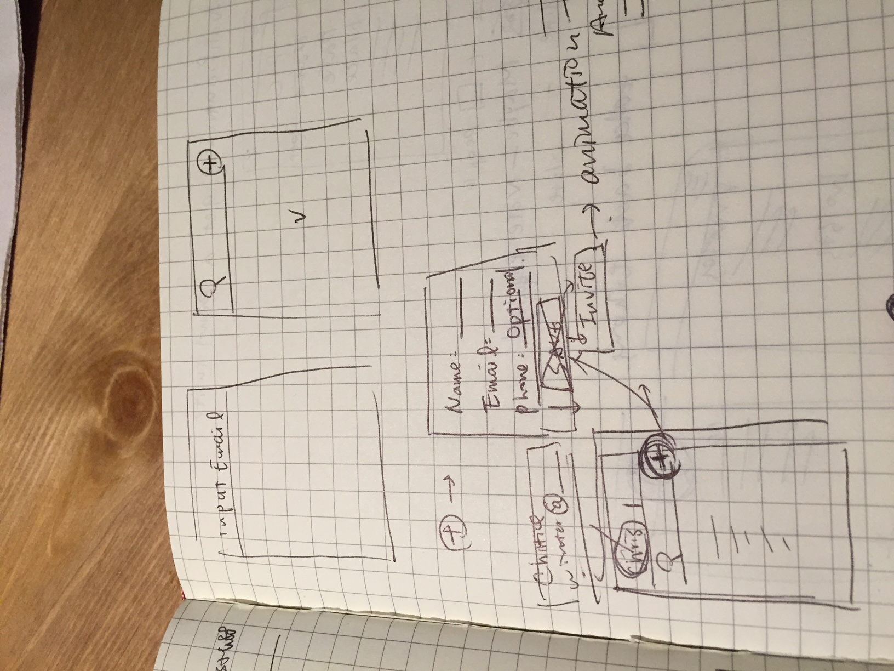

Introduction
Personal project with the goal of practicing Material Design and make an ad hoc event coordinator on Andriod devices.
Tools
Pen and Paper, Adobe Illustrator and Photoshop.
Process
- Define goal of the project; gather business and user requirements from stakeholders.
- Research on user behaviors by interviews and competitor analysis.
- Ideate design options by pen and my Moleskine.
- Build Lo-fi and High-Fi Prototypes to demonstrate/explore user flow, UI, Interactions and visual treatment.
- Next Step: Design Critique with friends and families
Hi-fi Prototype
Work Examples
Sketches
 
